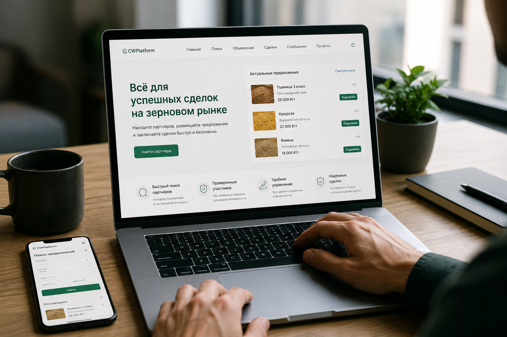

Простота использования -
Удобный инструмент для работы без лишних действий
Платформа разработана так, чтобы пользователь мог быстро разобраться в основных функциях и перейти к работе без длительного обучения. Удобная навигация, понятная структура и быстрый доступ к ключевым инструментам помогают сократить время на поиск решений, взаимодействие с партнёрами и организацию поставок. Независимо от опыта работы с цифровыми сервисами пользователь получает простой и понятный процесс работы.